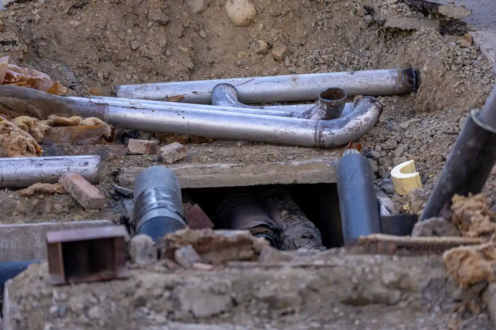

For Your Home
We find the leak, repair the line, and pressure-test it before we leave. You get a written summary of the work and the test results.
- Gas smell near furnace
- Water heater connector leak
- Old steel piping corrosion
If you smell gas in your Arlington Heights home, every minute counts. One call and we're on the way.
 Leak pinpointingPressure testingCode-correct repair
Leak pinpointingPressure testingCode-correct repairEvery gas leak call includes a full safety inspection, leak pinpointing, repair, and pressure testing. Here's what's covered when you hire us for gas leak detection and repair Arlington Heights IL.

We inspect from the meter to every gas appliance, checking shut-off valves, supply lines, connectors, and pipe joints. We use a combustible gas detector and soap-bubble testing to confirm any suspect area before we move to repair.
We isolate sections of the gas line with shut-off valves and use a pressure gauge to watch for pressure drop. That tells us whether the leak is in the main run, a branch line, or an appliance connector, so we repair the right part.
We cut out the failed section with a pipe cutter and install new copper pipe or PEX tubing using approved fittings, solder, and Teflon tape.
Failing shut-off valves and appliance connectors are common leak sources. We replace them with new code-rated parts, including Watts valves and approved flexible connectors, and test each connection after installation.
After the repair, we pressurize the line and hold it to confirm zero pressure drop. We relight pilot lights, check appliance burners, and give you a written summary of the repair and test results for your records.
The approach is the same for a home and a business. What changes is the access, the schedule and who needs the paperwork.
We find the leak, repair the line, and pressure-test it before we leave. You get a written summary of the work and the test results.
We handle commercial gas leaks for restaurants, offices, and retail spaces. We work around your hours and document the repair for your records.
A plain-language look at what Gas Leak Detection and Repair involves and when it is needed.
See how it worksWe use electronic combustible gas detectors, soap-bubble testing, and pressure gauges to find leaks that your nose alone can't pinpoint. Once we isolate the source, we repair the line with code-approved materials like copper pipe or PEX tubing and re-test every joint before we leave.
Arlington Heights has a lot of older housing stock, especially around Old Arlington Heights and the Miner Street Corridor, where original steel gas piping and aging shut-off valves are common. Those older lines corrode from the inside and can develop pinhole leaks you won't notice until you smell gas near the furnace or water heater. If you've been searching for gas leak detection near me Arlington Heights IL, we handle both the emergency call and the permanent repair. We also service natural gas leak repair Arlington Heights IL for newer construction where a fitting or appliance connector has failed.
A gas leak is found by testing, not guessing. We isolate, repair, and prove the line holds.

From your first call to the final pressure test, here is exactly what happens when you hire us for gas leak repair in Arlington Heights.
You call (224) 643-9856 and describe what you're smelling and where. We ask a few safety questions, tell you to leave the building if the odor is strong, and dispatch the nearest available technician. Most Arlington Heights calls get a 60 to 90 minute arrival window, and we call ahead when we're close.

The technician walks the gas system from the meter to each appliance, checking shut-off valves, supply lines, and connectors. We use a combustible gas detector to sweep joints and fittings, then confirm with soap-bubble testing. This step usually takes 20 to 40 minutes depending on how many gas appliances you have.

Once we know the general area, we isolate sections with shut-off valves and use a pressure gauge to watch for pressure drop. That tells us whether the leak is in the main run, a branch line, or an appliance connector. We mark the exact spot before any repair begins so you can see what failed.

We shut off the gas, cut out the failed section with a pipe cutter, and install new copper pipe or PEX tubing with approved fittings. If a shut-off valve or appliance connector is the problem, we replace it with a new Watts or similar code-rated part. Most repairs take one to three hours.

After the repair, we pressurize the line and hold it to confirm zero drop. Then we relight pilot lights, check appliance burners, and walk you through what we found and fixed. You get a written summary of the repair and the test results before we pack up.

Move across a circle, or focus it and press Enter, for an illustrative thermal view of the photograph.

Sweeps joints, valves, and connectors to detect escaping natural gas at concentrations far below what your nose can smell.

Measures gas line pressure to confirm whether the line holds pressure after isolation and after repair.

Cuts copper pipe and steel gas line cleanly so we can remove the failed section and install a new piece with a proper fit.

Used to sweat copper pipe joints for a permanent, code-approved connection on gas lines.

Includes electronic detectors and soap-bubble testing supplies to confirm leak locations before and after repair.
Thermal views are illustrative, generated from the photographs.
Crimps PEX tubing connections when we use PEX for a gas line repair or new run.
Inspects hard-to-reach areas when we need to verify a gas line path or rule out other underground issues.
We isolate the gas line, pressurize it, and watch the gauge for a set period. A steady gauge means the line holds. A dropping gauge tells us there's still a leak and helps us narrow the section.
We apply a soap solution to suspect joints and watch for bubbles. It's a simple, reliable confirmation method that works alongside electronic detection for double verification.
We close shut-off valves to isolate sections of the gas system, then test each section individually. This narrows the leak to a specific run, branch, or appliance connection.
That means approved materials, proper joint methods, and a pressure test before we call the job complete.

You smell gas in your Arlington Heights home at 2 a.m. and the odor is strong near the furnace.
Leave the house and call 911 or your gas utility from outside. Then call us at (224) 643-9856. We dispatch an emergency gas leak repair Arlington Heights IL technician immediately, day or night. We isolate the leak, make the line safe, and repair it.
Outcome: You get a safe, leak-free gas line and a pressure test to prove it. Most emergency calls are resolved the same night.

Your gas bill jumped 20% with no change in usage, and you occasionally smell gas near the water heater.
A rising gas bill plus an intermittent odor usually means a small, steady leak. We run a pressure test on the gas line, isolate the leak, and repair the failed section. We also check the water heater's gas valve and thermocouple.
Outcome: Your gas bill returns to normal, the odor is gone, and the water heater is verified safe. The repair typically takes two to three hours.
You're buying a home in Arlington Heights and the inspection report flags a gas odor near the meter.
We perform a full gas leak inspection for the buyer or seller, document the leak location, and provide a repair quote. If the seller agrees, we make the repair and provide a pressure test report for the closing file.
Outcome: The sale moves forward with a documented, code-correct repair. You get a written report showing the line holds pressure.

You're adding a gas range or dryer and need a new gas line run in your Arlington Heights kitchen or laundry room.
We run a new copper or PEX gas line from the nearest existing gas source, install a shut-off valve, and connect the appliance. We pressure-test the new line and check the appliance connection for leaks.
Outcome: Your new appliance runs safely on a code-compliant gas line. The whole job usually takes three to four hours.

A tenant in your Arlington Heights commercial building reports a gas smell near a rooftop HVAC unit.
We dispatch a commercial gas leak technician, trace the odor with a combustible gas detector, and isolate the leak. We repair the fitting or line, pressure-test it, and provide a written report for your property records.
Outcome: The tenant is safe, the gas line is repaired and tested, and you have documentation for your files. Most commercial calls are resolved within four hours.

Arlington Heights sits in Cook County, and its housing stock ranges from 1920s bungalows near Old Arlington Heights to newer construction around Arlington Market and Creekside. Older homes often still have original steel gas piping, which corrodes and develops pinhole leaks at joints and low spots. Newer homes use copper pipe or PEX tubing with flexible appliance connectors that can fail at the fitting.
Winter makes gas leaks more noticeable because furnaces and water heaters run constantly, and the ground shifts with freeze-thaw cycles, stressing buried lines. If you need gas leak detection Arlington Heights, Illinois, we know where to look first based on your neighborhood and the age of your home.
We also handle emergency gas leak repair Arlington Heights IL calls during cold snaps when heating systems are working hardest.

Before: A homeowner in Old Arlington Heights smelled gas in the basement whenever the furnace kicked on. The original 1940s steel gas line had corroded at three joints, and a pressure test showed the line wouldn't hold. The homeowner was worried about tearing up the basement ceiling.
After: We isolated the failed section, cut out 12 feet of corroded steel pipe, and replaced it with new copper pipe. We replaced two shut-off valves while we were in there. The pressure test held steady at 10 PSI for 30 minutes, and the gas odor was gone.
We recommended an annual gas line inspection to catch corrosion early. The new copper pipe won't corrode like steel, but the remaining original sections should be checked each year.
Before: A Scarsdale homeowner noticed a faint gas smell near the water heater that got stronger when the burner fired. The flexible connector between the gas line and the water heater had a cracked fitting. The homeowner had been ignoring it for a week.
After: We shut off the gas, replaced the failed connector with a new code-rated flexible connector, and checked the shut-off valve. The combustible gas detector read zero after the repair, and the pressure test held. The whole job took about 90 minutes.
We told the homeowner to check the connector annually for cracks or corrosion. Flexible connectors have a limited lifespan and should be replaced every 5 to 7 years.
Before: A restaurant owner in the Arlington Heights Business District called at 6 a.m. after a employee smelled gas near the kitchen's gas range. The restaurant was scheduled to open at 10 a.m. and the owner needed the line safe before staff arrived.
After: We arrived within 45 minutes, traced the leak to a loose fitting on the gas range connection, and tightened and sealed it. We pressure-tested the line and swept the kitchen with a combustible gas detector. The restaurant opened on time at 10 a.m.
We recommended a quarterly gas line check for the commercial kitchen. High-use gas equipment needs more frequent inspection than residential appliances.
These are the most common gas leak scenarios we see in Arlington Heights homes and businesses, and how we fix them.

A safe, tested gas line and a written record of the repair.
Most calls in the 60005 and 60004 ZIP codes get a technician on-site within 60 to 90 minutes. We arrive with electronic leak detection equipment, isolate the leak, and make the line safe before we discuss permanent repairs.
We use approved pipe fittings, solder, and Teflon tape on threaded joints. We pressure-test the line after the repair and document the results so you have a record for your insurance company or a future home sale.
Guessing wastes time and money. Our technicians use combustible gas detectors and pressure gauges to narrow the leak to a specific joint, appliance connector, or pipe section. That means we repair the actual failed part instead of cutting open walls or replacing pipe that's still sound.
We quote the repair before we start. Affordable gas leak repair in Arlington Heights, Illinois starts with a clear diagnosis and a flat price for the fix. No surprise add-ons, no hourly meter running while we work. You approve the number, we do the job, and we test it before we leave.
Clear records you can keep and share.
What failed and what we fixed
Pressure readings before and after
Images of the leak and repair
Materials used on the repair
Not every gas smell is an emergency, but every gas smell needs a test. Here is how we categorize what we find.
Small leak at a fitting or connector
Steady leak in a pipe section
Large leak or multiple failures
A list like this tells people straight away whether you cover their street. Not listed? Call and ask: it only takes a minute.
Based in Arlington Heights and covering the places around it. Pick one for local details.
Leave the building immediately and call 911 or your gas utility from outside, then call us at (224) 643-9856 for emergency gas leak repair Arlington Heights IL. Don't flip light switches, use your phone indoors, or start a car in the garage. Once the utility makes the scene safe, we can locate and repair the leak. If the odor is faint but persistent, still treat it as real and get out.
A simple appliance connector or shut-off valve replacement sits at the low end. A buried line repair or a leak inside a wall pushes toward the higher end. We quote the price after diagnosis and before we start work.
Call 911 or your gas utility first if you smell a strong odor or hear hissing. We handle the diagnosis, repair, and pressure testing. We work with Nicor Gas customers regularly and can coordinate with the utility if the leak is on their side of the meter.
We use electronic combustible gas detectors to sweep joints, valves, and appliance connectors, then confirm with soap-bubble testing on any suspect area. A pressure gauge test isolates the leak to a specific section of pipe. For hard-to-reach lines, we may use a sewer camera or leak detection equipment to inspect without cutting open walls. The whole process usually takes 30 to 60 minutes.
Other services from the same team.
If you smell gas, don't wait. We find the leak, fix it, and pressure-test the line before we leave. Call (224) 643-9856 now.
Call (224) 643-9856 or email us and we will get back to you fast. Tell us what is going on and we will tell you what it takes to fix it.